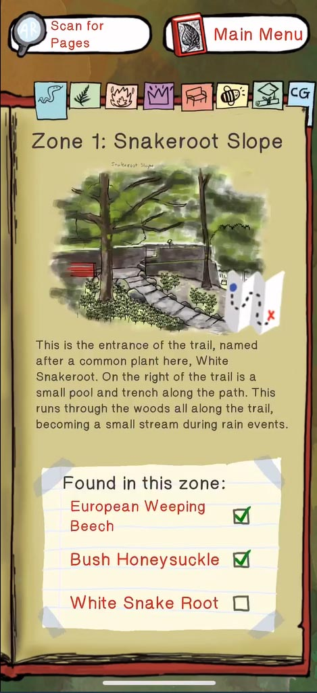
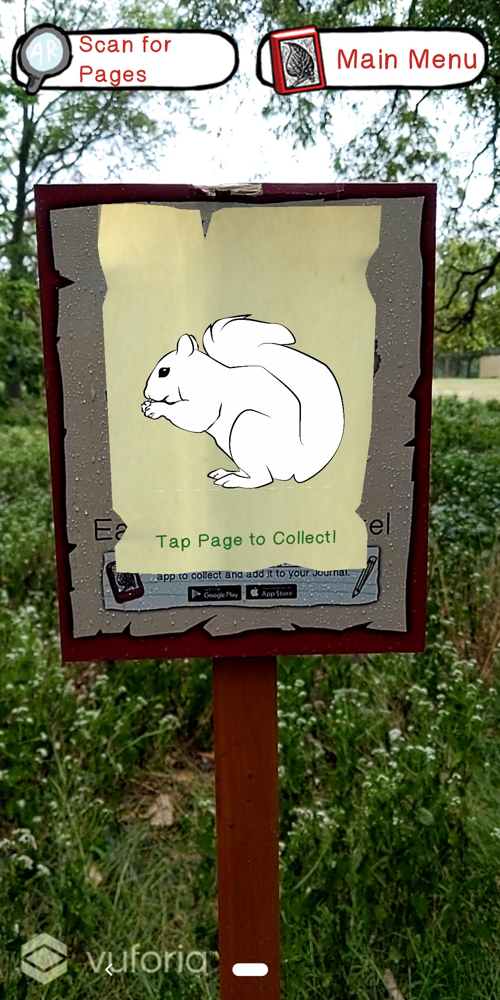
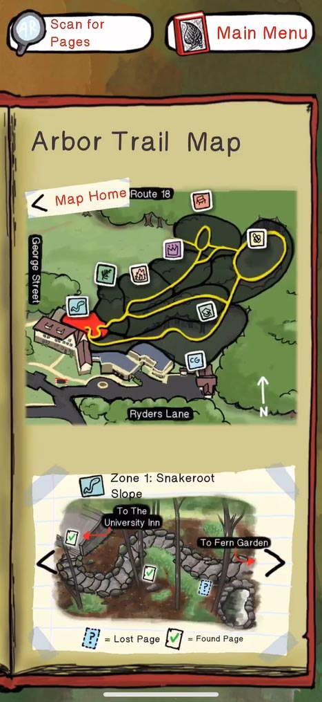

As a first time team member for Rutgers GRID, this was my introduction to video game design and creation.
Our team was commissioned by the Rutgers University Inn and Conference Center to revitalize the historical Arbor Trail.
This project was designed as an interactive way to engage with and learn about the variety of organisms and their habitats.
Rutgers GRID collaborated with other departments, such as the Landscape Architecture division in the School of Environmental and Biological Sciences, in order to
create this multi-disciplinary project.
Our game needed to be based on research sound material in order to educate individuals interested in the cross development between nature and technology:
With these project requirements, we brainstormed a variety of solutions, such as showing 3D versions of the wildlife and wildlife through the seasons.
Given our resources, we narrowed down which deliverables to focus on for the first launch iteration.
We came to implement a trivia mechanic to quiz players about each plant once the they come across the plaque on the trail.
Players would use their phone camera to scan the sign for the plant.
Our current version of the game focuses on the trivia mechanic but has an added story to immerse the players in a role.
Players are tasked with filling out missing pages of this found book. They answer trivia questions to unlock content.
As a designer for this project, I researched about the organisms that reside on the Arbor Trail. I met with other graduate students and faculty members
to confirm source material for the app. I designed the plaques for the trail. I wanted to recreate a similar naturalist feeling akin to James Audubon collections
while remaining mindful of the digitalization with XR technology.
At the end of our first released version, students joined the launch during Rutgers Day with their
friends and family.


